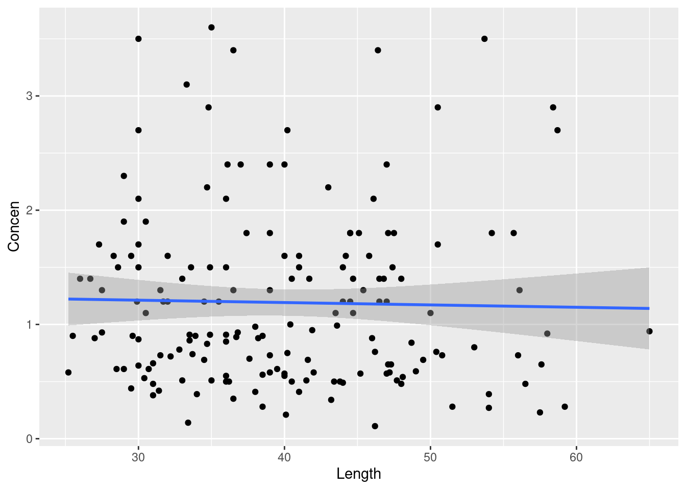
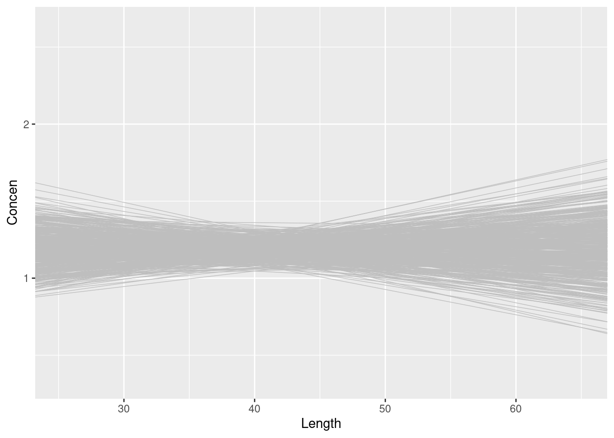
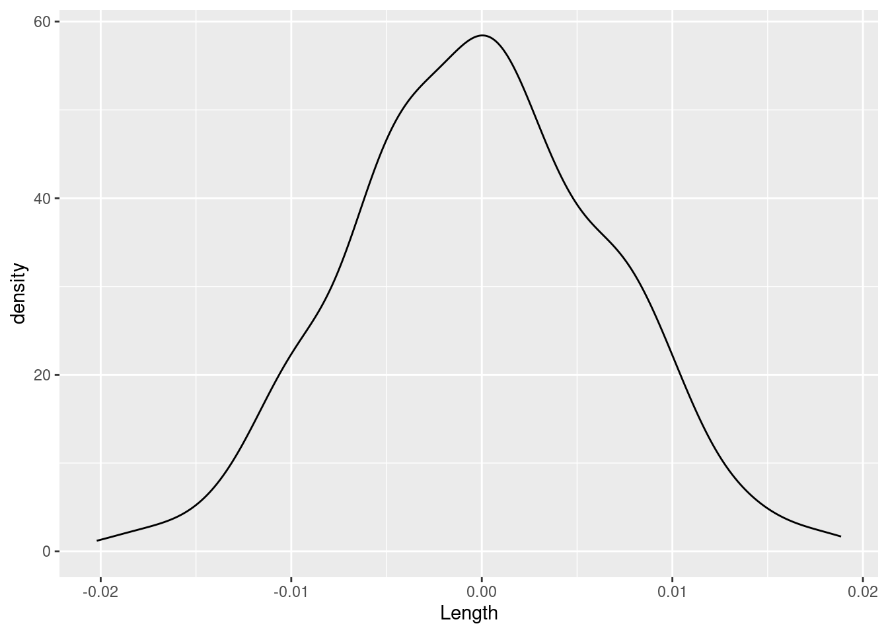
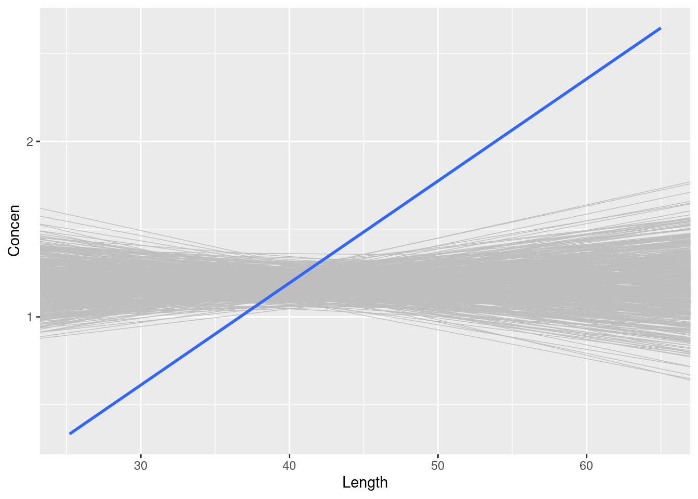
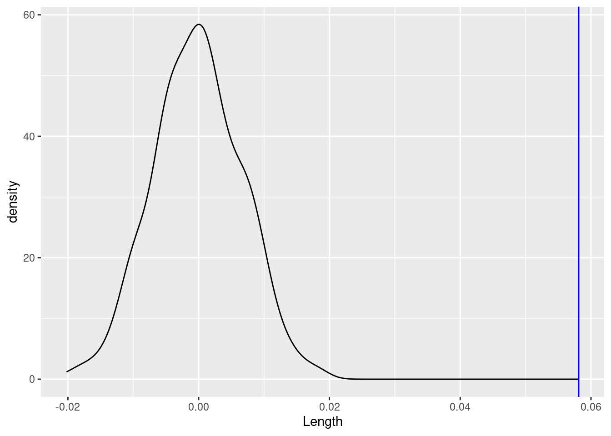
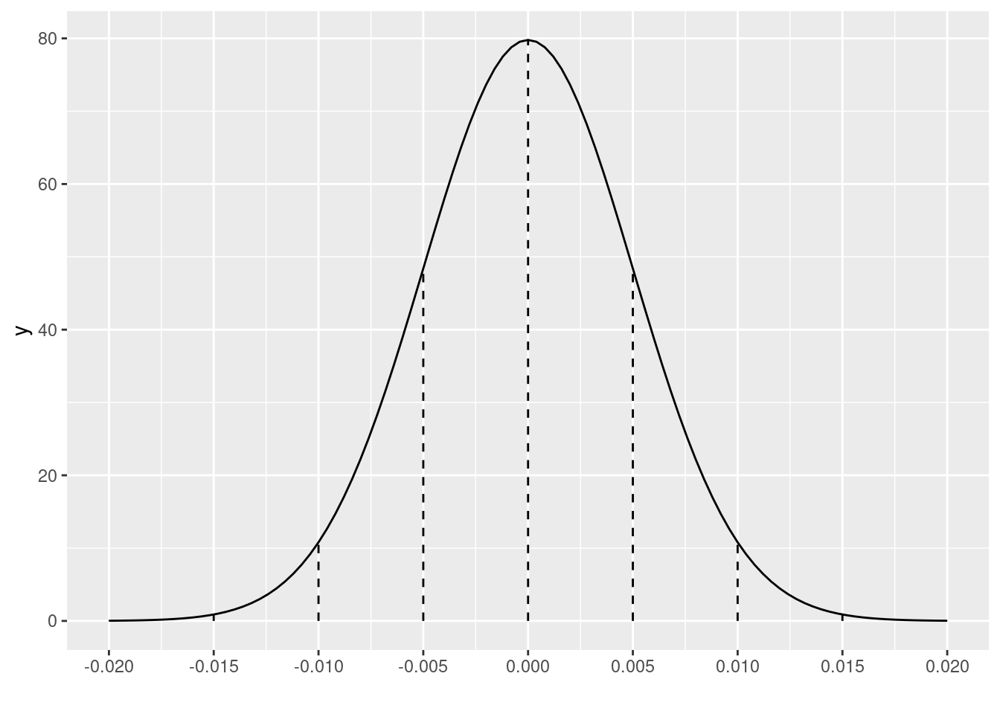
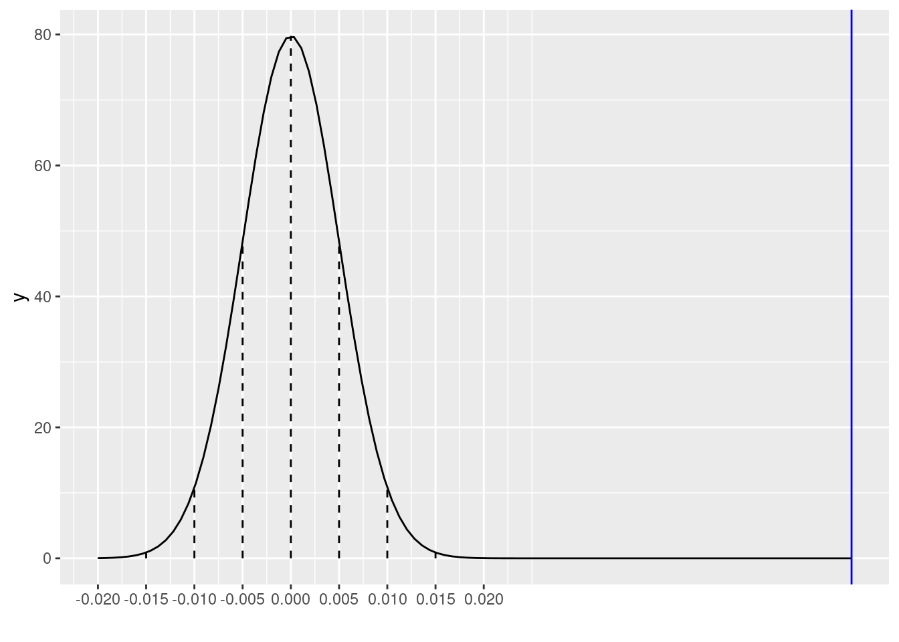

# Load the data & packages
library(tidyverse)
fish <- read_csv("https://mac-stat.github.io/data/Mercury.csv")
head(fish)Hypothesis testing: discovery
Notes
- You can download a template file to work with here.
- File organization: Save this file in the “Activities” subfolder of your “STAT155” folder.
Learning goals
By the end of this lesson, you should be able to:
- Understand how standard errors and confidence intervals enable us to make statistical inferences
- Articulate how we can formalize a research question as a testable, statistical hypothesis
Readings and videos
This is a discovery activity, so no assigned readings/videos today.
Exercises
Let’s return to the fish dataset. Recall that rivers contain small concentrations of mercury which can accumulate in fish. Scientists studied this phenomenon among 171 largemouth bass in the Wacamaw and Lumber rivers of North Carolina, recording the following:
| variable | meaning |
|---|---|
| River | Lumber or Wacamaw |
| Station | Station number where the fish was caught (0, 1, …, 15) |
| Length | Fish’s length (in centimeters) |
| Weight | Fish’s weight (in grams) |
| Concen | Fish’s mercury concentration (in parts per million; ppm) |
Exercise 1: Review
Research goal: Explore the relationship of mercury concentration (Concen) with the size of a fish, as measured by its Length. To this end, we’ll use our sample data to make inferences about the broader population model:
\[ E[Concen | Length] = \beta_0 + \beta_1 Length \]
Part a
Fit a simple linear regression model that would address our research question.
fish_mod_1 <- lm(Concen ~ Length, data = fish)
summary(fish_mod_1)Interpret \(\hat{\beta}_1\), our sample estimate of the “true” \(\beta_1\) Length coefficient.
Part b
Using the 68-95-99.7 rule, construct an approximate 95% confidence interval for \(\beta_1\). That is, calculate an interval estimate of \(\beta_1\). Compare your CI to an exact 95% CI:
confint(fish_mod_1, level = 0.95)Part c
Interpret the 95% CI in context.
Exercise 2: Test a hypothesis using the CI
Is there enough evidence here to support the hypothesis that among the broader fish population of fish, not just our sample, that mercury levels are associated with / differ by fish length? That is, is there enough evidence to conclude that the slope of the population model is non-0:
\[\beta_1 \ne 0\]
NOTE: We’ll refer to 0 as the null value to which we’re comparing \(\beta_1\).
Part a
Explain why we can’t use our simple estimate \(\hat{\beta}_1\) to evaluate this hypothesis, but we can use the 95% CI for \(\beta_1\). (This is true in general, not just this fish example!)
Part b
So, does your 95% CI from Exercise 1 support the hypothesis that there’s a relationship between mercury levels and fish length? Explain.
Exercise 3: Simulating data under the null value
Though CIs can help us evaluate hypotheses, hypothesis tests provide a more formal approach. The general idea:
Assume that the hypothesis is not true. That is, assume that there’s no association between mercury concentration and fish length (\(\beta_1 = 0\)).
Then, evaluate how compatible your observed sample data are with this assumption that \(\beta_1 = 0\).
Let’s focus on the first step here. Specifically, let’s explore how our sample data might behave if in fact there were no association between mercury concentration and fish length.
Part a
Read carefully:
- Suppose that when each individual fish in our sample was collected, the scientists wrote its
ConcenandLengthon a piece of paper. - They then ripped the paper in half, with the observed
Concenon one half and the observedLengthon the other. - They then accidentally dropped the pieces of paper! In the resulting mess, they couldn’t tell which
Lengthobservation went with eachConcenobservation. - To cover up their mistake, they just randomly matched up the
LengthandConcenpieces of paper. Essentially, in this shuffling process, the scientists broke the bond of the originalLengthandConcenpairs.
Question: Intuitively, if the researchers plotted the new pairs of Concen and Length values, what do you think their scatterplot would look like? What about the sample model?
Part b
We can simulate this idea in RStudio! Throughout, focus on concepts over code.
# First check out the first 6 fish
fish %>%
select(Concen, Length) %>%
head()Now, randomly shuffle the Length values! That is, break the original Concen and Length pairs, and just randomly assign Length:
# Run this chunk a few times!!
# Shuffle the Length values
fish %>%
select(Concen, Length) %>%
mutate(Length = sample(Length, size = length(Length), replace = FALSE)) %>%
head()Let’s check out the sample models that arise from the shuffled Concen and Length pairs:
# Shuffle the Length values
# Run this chunk a few times!!
# Then plot the resulting sample data and model
fish %>%
select(Concen, Length) %>%
mutate(Length = sample(Length, size = length(Length), replace = FALSE)) %>%
ggplot(aes(x = Length, y = Concen)) +
geom_point() +
geom_smooth(method = "lm")Question: Summarize your observations! Was your intuition in Part a correct?
Part c
These shuffled samples give us a sense of the sample models we’d expect IF \(\beta_1\) were actually 0, i.e. if there were no relationship between Concen and Length in the broader population of fish. To get a sense of the range of possible outcomes in this scenario, let’s simulate a bunch of shuffled samples. Specifically, take 500 different shuffled samples and use each to estimate the model of Concen by Length (gray lines). Summarize your observations!! If there were truly no relationship between Concen and Length, how would we expect the sample data to behave?
set.seed(1)
shuffled_models <- mosaic::do(500)*(
fish %>%
select(Concen, Length) %>%
sample_n(size = length(Length), replace = TRUE) %>%
mutate(Length = sample(Length, size = length(Length), replace = FALSE)) %>%
with(lm(Concen ~ Length))
)
head(shuffled_models)fish %>%
ggplot(aes(x = Length, y = Concen)) +
geom_abline(data = shuffled_models,
aes(intercept = Intercept, slope = Length),
color = "gray", size = 0.25) +
geom_smooth(method = "lm", se = FALSE, size = 0) # Ignore this line. It's a clunky workaroundPart d
Finally, focus on just the slope estimates \(\hat{\beta}_1\) behind the lines above. If there were truly no relationship between Concen and Length, i.e. \(\beta_1\) were truly 0, how would we expect the sample slopes to behave?
shuffled_models %>%
ggplot(aes(x = Length)) +
geom_density()Exercise 4: Comparing our sample results to the null value (intuition)
Now that we’ve simulated how sample data might behave if there were truly no relationship between Concen and Length (i.e. if \(\beta_1\) were 0), let’s consider the next important step in a hypothesis test:
Evaluate how compatible our observed sample data are with this assumption that \(\beta_1 = 0\)!
Part a
Let’s start with a visual assessment. Is our sample model (blue line) consistent / compatible with the “null models” simulated under the assumption the \(\beta_1 = 0\) (gray lines)?
fish %>%
ggplot(aes(x = Length, y = Concen)) +
geom_abline(data = shuffled_models,
aes(intercept = Intercept, slope = Length),
color = "gray", size = 0.25) +
geom_smooth(method = "lm", se = FALSE)Part b
Consider another visual assessment, focusing just on the slopes of the lines in the plot above, i.e. our sample estimates \(\hat{\beta}_1\). Is our sample slope of \(\hat{\beta}_1 = 0.05813\) (blue line) consistent / compatible with the collection of slopes from the “null models” (density plot)?
shuffled_models %>%
ggplot(aes(x = Length)) +
geom_density() +
geom_vline(xintercept = 0.05813, color = "blue")Part c
In Part b, you evaluated the compatibility of our sample slope \(\hat{\beta}_1 = 0.05813\) model with slopes of the “null models” using visual cues alone. But for a formal hypothesis test, we need some numerical measures of compatibility. Brainstorm some ideas!
Exercise 5: CLT
Now that we’ve built up some intuition using simulation, let’s formalize these concepts. You shouldn’t be surprised to know that sampling distributions are at the heart of hypothesis testing! The distribution of slopes from our shuffled sample models uses simulation to approximate the sampling distribution of slope estimates \(\hat{\beta}_1\) we’d expect if the population slope \(\beta_1\) were actually 0 (the null value):
shuffled_models %>%
ggplot(aes(x = Length)) +
geom_density()We can also approximate the sampling distribution using mathematical theory, specifically the Central Limit Theorem. If \(\beta_1\) were truly 0, then the distribution of possible sample estimates \(\hat{\beta}_1\) would be Normally distributed around 0:
\[ \hat{\beta}_1 \sim N(0, s.e.(\hat{\beta}_1)^2) \]
where in Exercise 1 we approximated the standard error to be 0.005. Thus a plot of the CLT is below. Confirm that this is similar to the simulated sampling distribution above:
# Don't worry about this code!!!
# Save your plot
clt_plot <- data.frame(x = 0 + c(-4:4)*0.005) %>%
mutate(y = dnorm(x, sd = 0.005)) %>%
ggplot(aes(x = x)) +
stat_function(fun = dnorm, args = list(mean = 0, sd = 0.005)) +
geom_segment(aes(x = x, xend = x, y = 0, yend = y), linetype = "dashed") +
scale_x_continuous(breaks = c(-4:4)*0.005) +
xlab("")
clt_plotExercise 6: Comparing our sample results to the null value (test statistic)
Our sample slope estimate of \(\hat{\beta}_1 = 0.05813\) is shown on the sampling distribution of sample slopes \(\hat{\beta}_1\) that we’d expect if the population slope \(\beta_1\) were actually 0 (the null value):
clt_plot +
geom_vline(xintercept = 0.05813, color = "blue")To measure how compatible (or incompatible) our estimate is with the null value, we can measure the distance between the two.
Part a
Quick questions:
How far is our sample slope estimate of \(\hat{\beta}_1 = 0.05813\) from the null value of 0?
In the context of this particular analysis, is that a big or a small number? How can you tell?
Part b
In practice, we standardize our distance calculations so that they have the same meaning no matter the context of the analysis. We can do this by calculating a z-score:
\[ \frac{\hat{\beta}_1 - \text{null value}}{s.e.(\hat{\beta}_1))} = \text{ number of s.e. that $\hat{\beta}_1$ falls from the null value} \]
This is called the test statistic. Calculate and interpret the test statistic for our example.
Part c
Within rounding, the same test statistic appears in our model summary table! Where is it?!
coef(summary(fish_mod_1))Part d
What can we conclude from your test statistic calculation and interpretation:
Our sample data is not consistent with the null value of \(\beta_1 = 0\), i.e. the idea that there’s no significant association between mercury concentration and length.
Our sample data is consistent with the null value of \(\beta_1 = 0\).
Exercise 7: Comparing our sample results to the null value (p-value)
Again, our sample slope estimate of \(\hat{\beta}_1 = 0.05813\) is shown on the sampling distribution of sample slopes \(\hat{\beta}_1\) that we’d expect if the population slope \(\beta_1\) were actually 0 (the null value):
clt_plot +
geom_vline(xintercept = 0.05813, color = "blue")Part a
Another way to evaluate the compatibility of our estimate with the null value of \(\beta_1 = 0\) is to ask how likely we are to have gotten this estimate if the null value were indeed true! That is, what’s the probability that we would have gotten a sample slope that’s at least 0.058 above or below 0 IF in fact there were no association between mercury concentration and length? Use the 68-95-99.7 Rule with the plot above to approximate the p-value:
- less than 0.003
- between 0.003 and 0.05
- between 0.05 and 0.32
- bigger than 0.32
Part b
The calculation above is called a p-value. A more accurate p-value is reported in the model summary table in the Pr(>|t|) column. What is it?
coef(summary(fish_mod_1))Part c
How can we interpret the p-value?
It’s very unlikely that we’d have observed such a steep increase in
ConcenwithLengthamong our sample fish “by chance”, i.e. if in fact there were no relationship between mercury concentration and length in the broader fish population.In light of our sample data, it’s very unlikely that mercury concentration is associated with length.
In light of our sample data, it’s very unlikely that mercury concentration and length are unrelated.
Exercise 8: River test Part I
The fish in our sample come from two different rivers: Lumber and Wacamaw. Research question: Is there evidence that the mercury concentration in fish differs between the 2 rivers? To answer this question, we’ll control for fish Length – we don’t want to mistakenly detect a difference in mercury levels just because we happened to sample bigger fish in one river and smaller fish in the other. The relevant population model is:
\[ E[Concen | River, Length] = \beta_0 + \beta_1 RiverWacamaw + \beta_2 Length \]
Part a
To address the above research question, which model coefficient / population parameter is of primary interest: \(\beta_0\), \(\beta_1\), or \(\beta_2\)?
And what’s the null value of this coefficient? That is, what would this coefficient be if there were truly no difference in mercury concentration between the 2 rivers (when controlling for length)?
Part b
For the parameter of interest, obtain and report a sample estimate and its corresponding standard error:
fish_mod_2 <- lm(___, data = fish)
coef(summary(fish_mod_2))Part c
Let’s use this data to evaluate our research question. To do so, remember the next step: Assume that the null value from Part a is correct and determine what sample estimates we would expect to get in this scenario.
Adjust the code below to sketch the appropriate sampling distribution. Represent our sample estimate by a blue line.
# Put OUR sample estimate here
# Round to 3 digits
est <- ___
# Put the corresponding standard error here
# Round to 3 digits
se <- ___
data.frame(x = 0 + c(-4:4)*se) %>%
mutate(y = dnorm(x, sd = se)) %>%
ggplot(aes(x = x)) +
stat_function(fun = dnorm, args = list(mean = 0, sd = se)) +
geom_segment(aes(x = x, xend = x, y = 0, yend = y), linetype = "dashed") +
scale_x_continuous(breaks = c(-4:4)*se) +
geom_vline(xintercept = est, color = "blue")
xlab("")Exercise 9: River test Part II
Remember the next step: We must evaluate how compatible our sample estimate is with the null value. We’ll take 3 approaches: using a visual assessment, test statistic, and p-value.
Part a
Visually, in Part c of the previous exercise, does our sample estimate seem compatible with the null value? Mainly, is our estimate consistent with what we’d expect to observe if there were truly no difference in the mercury concentration between the 2 rivers (when controlling for fish length)?
Part b
Calculate and interpret the test statistic. Do this calculation by hand and check your work in the model summary table.
Part c
Recall that the p-value calculates the probability that, IF in fact the null value were correct (i.e. there was actually no difference in mercury concentration by river when controlling for length), we would have gotten a sample estimate that’s as far from the null value as ours, either above or below. Use the 68-95-99.7 Rule with the plot in Part c of the previous exercise to approximate the p-value:
- less than 0.003
- between 0.003 and 0.05
- between 0.05 and 0.32
- bigger than 0.32
Now obtain and report the exact p-value from the model summary table.
Part d
Do your test statistic and p-value indicate that your estimate is or is not compatible with the null value? Explain.
Part e
Putting this all together, what do you conclude? When controlling for length…
- we have evidence of a statistically significant difference in mercury concentration by river.
- we do not have sufficient evidence to conclude that there’s a statistically significant difference in mercury concentration by river.
Exercise 10: River CI
Part a
Finally, construct a 95% CI for the population parameter of interest in our river analysis.
Part b
What do you conclude from this CI? When controlling for length…
- we have evidence of a statistically significant difference in mercury concentration by river.
- we do not have sufficient evidence to conclude that there’s a statistically significant difference in mercury concentration by river.
Part c
Your conclusions from the hypothesis test (test statistic and p-value) should agree with those from your CI! If this is not the case, review your work.
Solutions
# Load the data & packages
library(tidyverse)
fish <- read_csv("https://mac-stat.github.io/data/Mercury.csv")
head(fish)
## # A tibble: 6 × 5
## River Station Length Weight Concen
## <chr> <dbl> <dbl> <dbl> <dbl>
## 1 Lumber 0 47 1616 1.6
## 2 Lumber 0 48.7 1862 1.5
## 3 Lumber 0 55.7 2855 1.7
## 4 Lumber 0 45.2 1199 0.73
## 5 Lumber 0 44.7 1320 0.56
## 6 Lumber 0 43.8 1225 0.51Exercise 1: Review
Part a
fish_mod_1 <- lm(Concen ~ Length, data = fish)
summary(fish_mod_1)
##
## Call:
## lm(formula = Concen ~ Length, data = fish)
##
## Residuals:
## Min 1Q Median 3Q Max
## -1.1499 -0.3436 -0.1022 0.3123 1.9100
##
## Coefficients:
## Estimate Std. Error t value Pr(>|t|)
## (Intercept) -1.131645 0.213615 -5.298 3.62e-07 ***
## Length 0.058127 0.005228 11.119 < 2e-16 ***
## ---
## Signif. codes: 0 '***' 0.001 '**' 0.01 '*' 0.05 '.' 0.1 ' ' 1
##
## Residual standard error: 0.5805 on 169 degrees of freedom
## Multiple R-squared: 0.4225, Adjusted R-squared: 0.4191
## F-statistic: 123.6 on 1 and 169 DF, p-value: < 2.2e-16We estimate that for every 1cm increase in length, the expected mercury concentration increases by 0.058ppm.
Part b
\(0.058 \pm 2*0.005 = (0.058 - 0.010, 0.058 + 0.010) = (0.048, 0.068)\)
confint(fish_mod_1, level = 0.95)
## 2.5 % 97.5 %
## (Intercept) -1.55334248 -0.70994835
## Length 0.04780769 0.06844728Part c
We’re 95% confident that for every 1cm increase in length, the expected mercury concentration increases by somewhere between 0.048ppm and 0.068ppm.
Exercise 2: Test a hypothesis using the CI
Part a
The simple estimate \(\hat{\beta}_1\) has error that we need to account for when making inferences about the population. The CI accounts for this error!
Part b
Yes, the interval doesn’t include 0. Thus 0 is not a plausible value for \(\beta_1\).
Exercise 3: Simulating data under the null value
Part a
Intuition.
Part b
# First check out the first 6 fish
fish %>%
select(Concen, Length) %>%
head()
## # A tibble: 6 × 2
## Concen Length
## <dbl> <dbl>
## 1 1.6 47
## 2 1.5 48.7
## 3 1.7 55.7
## 4 0.73 45.2
## 5 0.56 44.7
## 6 0.51 43.8
# Run this chunk a few times!!
# Shuffle the Length values
fish %>%
select(Concen, Length) %>%
mutate(Length = sample(Length, size = length(Length), replace = FALSE)) %>%
head()
## # A tibble: 6 × 2
## Concen Length
## <dbl> <dbl>
## 1 1.6 34.5
## 2 1.5 43.2
## 3 1.7 40.5
## 4 0.73 46.5
## 5 0.56 32
## 6 0.51 35
# Shuffle the Length values
# Run this chunk a few times!!
# Then plot the resulting sample data and model
fish %>%
select(Concen, Length) %>%
mutate(Length = sample(Length, size = length(Length), replace = FALSE)) %>%
ggplot(aes(x = Length, y = Concen)) +
geom_point() +
geom_smooth(method = "lm")
Part c
If there were truly no relationship between Concen and Length, we’d expect the sample model to have a slope near to (but not exactly) 0.
set.seed(1)
shuffled_models <- mosaic::do(500)*(
fish %>%
select(Concen, Length) %>%
sample_n(size = length(Length), replace = TRUE) %>%
mutate(Length = sample(Length, size = length(Length), replace = FALSE)) %>%
with(lm(Concen ~ Length))
)
head(shuffled_models)
## Intercept Length sigma r.squared F numdf dendf .row
## 1 0.7994259 0.0075368727 0.6765800 7.371664e-03 1.255063194 1 169 1
## 2 0.9584317 0.0037391031 0.7811844 2.031882e-03 0.344087261 1 169 1
## 3 0.8270447 0.0089664603 0.7691294 9.240981e-03 1.576292349 1 169 1
## 4 0.7629911 0.0118477349 0.8498595 1.539909e-02 2.643148655 1 169 1
## 5 1.0765620 -0.0004547678 0.6746811 2.931604e-05 0.004954555 1 169 1
## 6 0.5069886 0.0188557911 0.8317681 3.879420e-02 6.820829143 1 169 1
## .index
## 1 1
## 2 2
## 3 3
## 4 4
## 5 5
## 6 6
fish %>%
ggplot(aes(x = Length, y = Concen)) +
geom_abline(data = shuffled_models,
aes(intercept = Intercept, slope = Length),
color = "gray", size = 0.25) +
geom_smooth(method = "lm", se = FALSE, size = 0) # Ignore this line. It's a clunky workaround
Part d
We’d expect slopes to be Normally distributed around 0 (the null value).
shuffled_models %>%
ggplot(aes(x = Length)) +
geom_density()
Exercise 4: Comparing our sample results to the null value (intuition)
Part a
No! Its slope is much bigger than for the sample models simulated using the null value!
fish %>%
ggplot(aes(x = Length, y = Concen)) +
geom_abline(data = shuffled_models,
aes(intercept = Intercept, slope = Length),
color = "gray", size = 0.25) +
geom_smooth(method = "lm", se = FALSE)
Part b
No! Our slope is much bigger than for the sample models simulated using the null value!
shuffled_models %>%
ggplot(aes(x = Length)) +
geom_density() +
geom_vline(xintercept = 0.05813, color = "blue")
Part c
Will vary.
Exercise 5: CLT
The simulated and CLT / theory-informed sampling distributions are similar!
shuffled_models %>%
ggplot(aes(x = Length)) +
geom_density()
clt_plot <- data.frame(x = 0 + c(-4:4)*0.005) %>%
mutate(y = dnorm(x, sd = 0.005)) %>%
ggplot(aes(x = x)) +
stat_function(fun = dnorm, args = list(mean = 0, sd = 0.005)) +
geom_segment(aes(x = x, xend = x, y = 0, yend = y), linetype = "dashed") +
scale_x_continuous(breaks = c(-4:4)*0.005) +
xlab("")
clt_plot
Exercise 6: Comparing our sample results to the null value (test statistic)
clt_plot +
geom_vline(xintercept = 0.05813, color = "blue")
Part a
How far is our sample slope estimate of \(\hat{\beta}_1 = 0.05813\) from the null value of 0? 0.05813 :)
In the context of this particular analysis, is that a big or a small number? How can you tell? This seems pretty big relative to the standard error.
Part b
Our sample slope of 0.058 falls more than 11 standard errors above the null value of 0. That’s far!!!
(0.058127 - 0) / 0.005228Part c
In the t value column:
coef(summary(fish_mod_1))Part d
- Our sample data is not consistent with the null value of \(\beta_1 = 0\), i.e. the idea that there’s no significant association between mercury concentration and length.
Exercise 7: Comparing our sample results to the null value (p-value)
clt_plot +
geom_vline(xintercept = 0.05813, color = "blue")
Part a
Our estimate is more than 3 s.e. away from 0. Since 99.7% of estimates fall within 3 s.e. the probability of this happening is…
- less than 0.003 (1 - 0.997)
Part b
< 2e-16 (which is very very close to 0)
coef(summary(fish_mod_1))
## Estimate Std. Error t value Pr(>|t|)
## (Intercept) -1.13164542 0.213614796 -5.297598 3.617750e-07
## Length 0.05812749 0.005227593 11.119359 6.641225e-22Part c
- It’s very unlikely that we’d have observed such a steep increase in
ConcenwithLengthamong our sample fish “by chance”, i.e. if in fact there were no relationship between mercury concentration and length in the broader fish population.
Exercise 8: River test Part I
Part a
\(\beta_1\), the RiverWacamaw coefficient
The null value is \(\beta_1 = 0\)
Part b
\(\hat{\beta}_1 = 0.142\) with a standard error of 0.089:
fish_mod_2 <- lm(Concen ~ River + Length, data = fish)
coef(summary(fish_mod_2))
## Estimate Std. Error t value Pr(>|t|)
## (Intercept) -1.19422929 0.216287220 -5.521497 1.255595e-07
## RiverWacamaw 0.14202739 0.089496454 1.586961 1.144018e-01
## Length 0.05765684 0.005212709 11.060821 1.033822e-21Part c
# Put OUR sample estimate here
# Round to 3 digits
est <- 0.142
# Put the corresponding standard error here
# Round to 3 digits
se <- 0.089
data.frame(x = 0 + c(-4:4)*se) %>%
mutate(y = dnorm(x, sd = se)) %>%
ggplot(aes(x = x)) +
stat_function(fun = dnorm, args = list(mean = 0, sd = se)) +
geom_segment(aes(x = x, xend = x, y = 0, yend = y), linetype = "dashed") +
scale_x_continuous(breaks = c(-4:4)*se) +
geom_vline(xintercept = est, color = "blue")
xlab("")
## $x
## [1] ""
##
## attr(,"class")
## [1] "labels"Exercise 9: River test Part II
Part a
Yes! Our estimate is relatively close to 0 on this scale (within 2 s.e.).
Part b
Our estimate of \(\beta_1\), 0.142, falls only 1.59 s.e. from 0:
(0.142 - 0) / 0.089
## [1] 1.595506
coef(summary(fish_mod_2))
## Estimate Std. Error t value Pr(>|t|)
## (Intercept) -1.19422929 0.216287220 -5.521497 1.255595e-07
## RiverWacamaw 0.14202739 0.089496454 1.586961 1.144018e-01
## Length 0.05765684 0.005212709 11.060821 1.033822e-21Part c
Our estimate is somewhere between 1 and 2 s.e. from 0:
- between 0.05 and 0.32
An exact p-value is 0.114:
coef(summary(fish_mod_2))Part d
It is. It is not very far from 0 (when considering s.e.) and would not be unlikely to observe if the null value were true.
Part e
When controlling for length…
- we do not have sufficient evidence to conclude that there’s a statistically significant difference in mercury concentration by river.
Exercise 10: River CI
Part a
Rough version:
\(0.142 \pm 2*0.089 = (-0.036, 0.320)\)
Exact version:
confint(fish_mod_2)Part b
When controlling for length…
- we do not have sufficient evidence to conclude that there’s a statistically significant difference in mercury concentration by river.